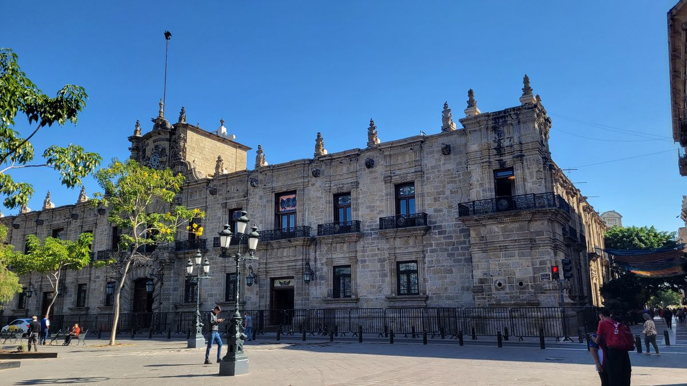
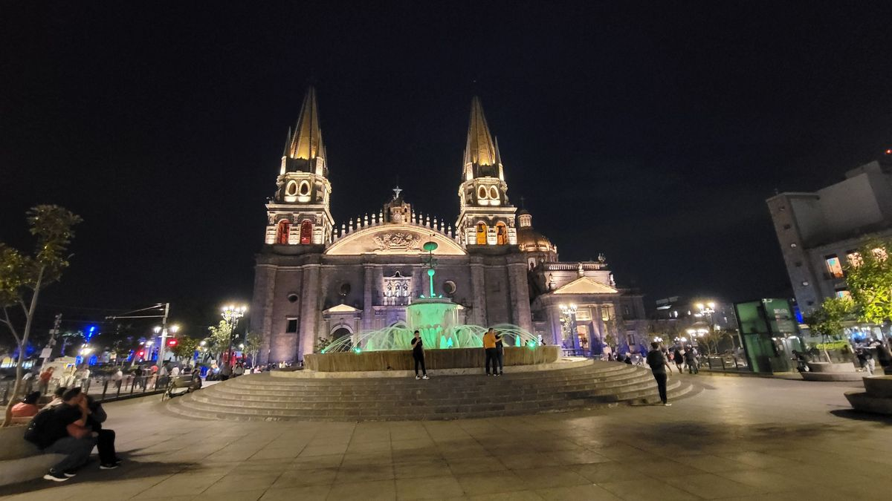
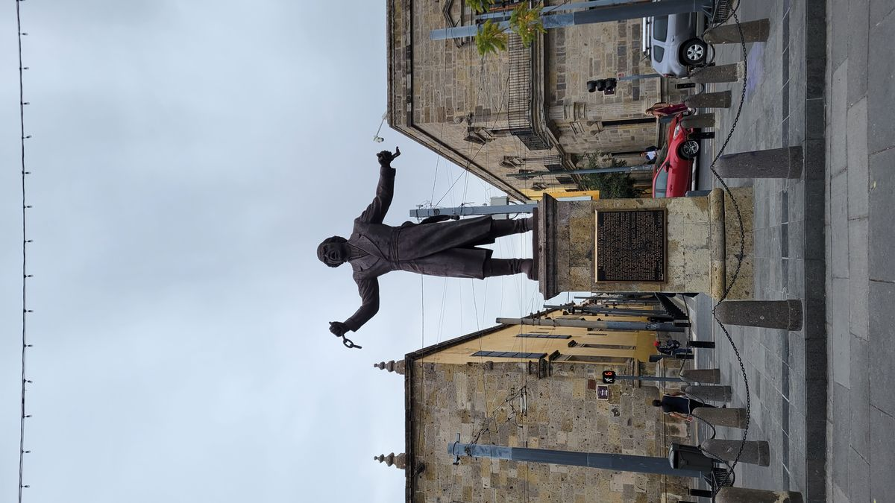
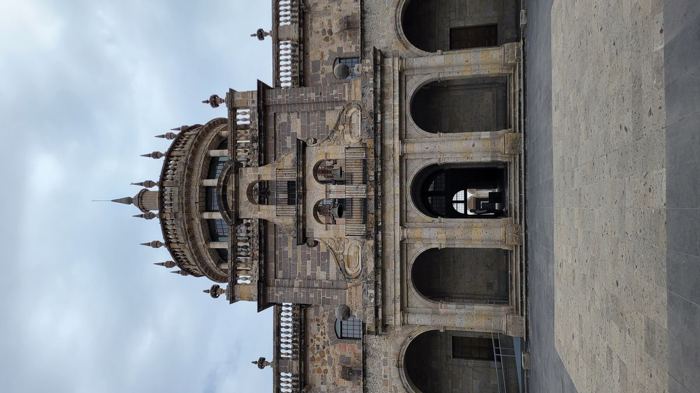
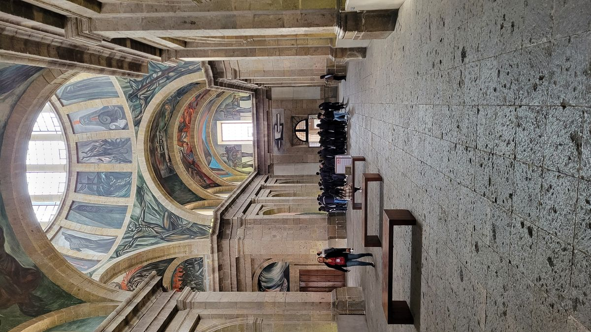
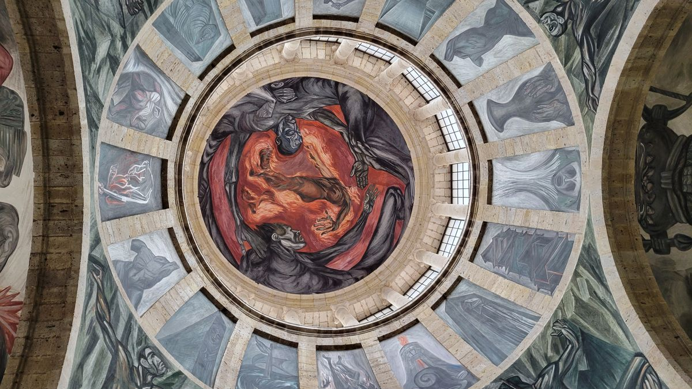

Guadalajara
As I came up the stairs from the Guadalajara metro, arriving to the city at its Plaza de Armas, the Palacio de Gobiero, or Government Palace, comes into view. Built in 1650 and destroyed by an earthquake in 1750, the current facade dates to 1790. Immediately next to it the Guadalajara Cathedral. Originally commissioned in 1541, but between earthquake damage and renovations, the Cathedral as it stands today was completed in 1854. Its immediately apparent that this trip has taken a different turn. The days of lounging on the beach and hiking through the jungles are on hold. Exchanged for culture, history and city vistas.


Guadalajara is México’s 3rd largest city. Monterey to the north and Mexico City to the east are the only metros to beat it. Home to Mariachi, Tequila and Birria, it is considered the cultural capital of México. It was also the first capital of independent México in 1810.My time in the city will be short, but I hope to be able to see as much of what the city has to offer.
The majority of attractions in the city are along Avenida Hidalgo in the Centro Historico. Starting at Cathedral and ending at the Hospicio Cabañas. Only about 1km long, the area houses many plazas, churches and statues that give a glimpse into the history of the city and state of Jalisco. “Free” (tips appreciated) and paid tours of the center are readily available. I personally used a smartphone app to guide and give commentary to the things I would see. Depending on how long you stop to appreciate and take in what you see, you can complete the tour in an hour or spend all day. Many of the churches and buildings are open to the public if you want learn more.

The tours culminate at the Hospicio Cabañas, now a museum, has been an orphanage, hospital and military barracks in its lifetime. It’s a UNESCO world heritage site because it houses the frescoes of Jose Clemente Orozco, who along with Diego Rivera and Davis Siquerios are considered Los Tres Grandes, or the three great muralists of contemporary Mexican art.



If you continue past the Historical Center you arrive at the Libertad Market, which is the largest local market in Mexico. With 40,000 square meters of space you can buy all your grocery necessities, electronics, clothes and “designer” items. The upper floors house restaurants for cheaper and more authentic eats. It’s a sensory overload as soon as you enter.
The main center of Guadalajara is a great introduction to the city and a must visit for anyone wanting the experience authentic Mexican culture.